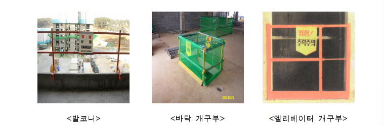

안전난간
위험포인트
▶바닥 개구부 주변에서 작업 중 추락위험
▶외부비계에서 작업 및 이동 중 추락위험
▶계단실, 계단참 슬라브 단부에서 추락위험
▶엘리베이스 PIT 개구부 내부로 추락위험
▶경사지붕 작업 중 추락위험
안전난간의 구조 및 설치기준
(1)안전 난간은 상부난간대, 중간난간대, 발끝막이판 및 난간기둥으로 구성
(2)상부난간대는 작업발판에서 90cm 이상 120cm 이하에 설치
(3)중간난간대는 작업발판에서 45cm 이상 60cm이하에 설치
(4)발끝막이판은 바닥면에서 10cm이상의 높이를 유지할 것
(5)난간대는 지름 2.7cm 이상의 금속제파이프나 그 이상의 강도를 가진 재료 사용
(6)난간대는 개구부가 발생하지 않도록 적정하게 길이 조절 요함
(7)안전난간은 100kg 이상의 하중에 견딜 수 있는 튼튼한 구조일 것
(8)기성제품 체결식 난간기둥의 수평간격은 2m이내로 할 것
※참고사항
-난간기둥 설치시 첫 번째 기둥은 벽면 등에서 50cm 이내에 설치
안전난간의 종류
설치사례 사진
